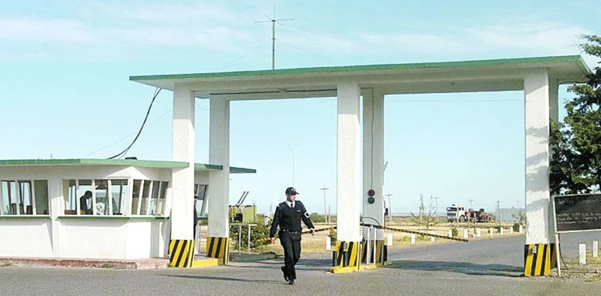

00 --- Cuarentena de Terror - Tomo 1 --- Irse
Me doy vuelta, yendo corriendo para el coche, y al correr veo que una multitud viene por la calle principal.
Alcancé a subir al coche, y mi papá salió arando la camioneta y llevándose por delante a todos los que estaban cerca de nosotros.
Estamos todos aterrorizados, y todos, son todos; nadie habló, y en un momento que solo estaban las montañas a nuestro costado y el precipicio del otro; hicimos una parada al costado del camino, mi papá dijo que nos bajemos todos y hay nos abrazamos y nos pusimos a llorar.
Seguimos la ruta sin ningún problema, pasamos por Los Altares, y cuando estábamos llegando a un pueblo cerca de Trelew, nos para el ejército que nos dice que no podemos seguir adelante porque una buena parte de Trelew estaba infectada.
Entonces mi papá le muestra sus documentos, que pertenece a la marina de guerra y que quería ir a la base Almirante Zar, que estaba a las afueras de Trelew. Los soldados le indican que vaya a un camino de tierra adyacente que era “Campo Traviesa”. Ese camino me llevaría cerca del aeropuerto y ahí habría una entrada adyacente a la base.
Pasado una hora en el portón, mi padre se identificó, nos revisaron a todos, y nos dejaron pasar. Y bueno, ahí nos instalamos dentro de la base, como refugiados que habían elegido como un punto de extracción, ya que de ahí podían operar con helicópteros y aviones grandes, para llevar a las personas a un lugar establecido por la nación.
Ahí nos enteramos, que este virus era una infección mundial, que contagia en el aire a todos los que eran mayores de 20 años y no tienen aplicada una dosis de vacuna.
